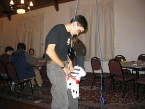

Twas In the Bleak December |
|
| vt experience home about features back to peterpages.net | |
Closing out the year by continuing in the vein of vaguely literary webisode titles, we come to the bleak December. In Blacksburg, the weather does get mildly depressing in the winter. However, all that means is that the action moves indoors. See what kinds of crazy stuff Hillcrest residents were up to in this year's action packed, special effects bonanza finale! |
Jump to a Section:
Snow Daze | Exam Breaks
Section 2:
|
Fiesta Night / Not Yo' Momma's Nachos Night | ||
| Hillcrest residents gather in anticipation of the first exam break of the semester: Fiesta Night! Complete with pinatas, festive music, nachos, and virgin margaritas. | ||
| How many engineers does it take to hang a pinata? | ||
| Well, only one, but he needs the proper cordage. Twine was completely insufficient. It wouldn't hold up to even one thwack with a wiffle bat. Check out ol' snakey. | ||
| That cordage, of course, would be Jeremy's ethernet cable. Check out the excellent official Boy Scout-type tautline hitch, tied by Peter. | ||
| Happy partygoers. Brad + Cameras + NACHOS!!! = Funny Reactions |
||
| Exam Breakers checking out their pinata toys. Oh, it looks like another one's getting ready to burst... | ||
| ...OH GOODNESS! IT'S CANDY! GOT TO GET IT! FEEDING FRENZY! Click here to see a video of Chris totally monstering the first pinata and the resulting candy craze. |
||
| And guess who broke the second pinata? Me. Yeah. I found it's one weak spot... it was taped together at the neck. And thus this picture of me holding a beheaded dog. | ||
 |
And now to tie up the dog pinata to reset it so some other people can get the glory of "killing" it over and over again. Sort of vicious, I suppose. | |
Unoffical Post-Fiesta X-Men-athon | ||
| After everything was cleaned up, a number of us retreated to the conference room (complete with stadium seating!) for part 2 of the X-men-athon! We finished the first movie, watched the second movie, and watched the trailer of the third movie. We certainly have some hardcore X-Men fans in the building. LAME JOKE TIME: Why does the conference room heat up after a showing of X-Men 2? Because all of the fans leave. WEIRD EVENT DURING FIESTA CLEAN UP: Click here to see a video of the amazing singing vacuum cleaner. This really happened. It was freaky. |
||
Unoffical Saturday Night DDR-athon | ||
| As a break from relaxing on Saturday, a few of us set up a Dance Dance Revolution event. If you don't know what this is, click here to see one of the experimental films of DDR. | ||
| As you can see if you watched the video, we've gotten better at the logistics of this type of event (read: we have a bigger screen) thanks to the workers at Brick House Productions. But here I am, trying to select a song to play. | ||
| And here's Kevin and I mid-jump. This night was our record length DDR night (5.5 hours) until we broke the record in February (7 hours). It's good exercise. | ||
Be a Kid Again Night | ||
| This program is a traditional exam break. Back by popular demand this year were all the junk food and classic games from years gone by. On this table are cookies, super sugary cereals, and such sweets as pixie sticks! Oh yeah! | ||
| And what would be a kid again night be without Twister! | ||
| Yes, I was there! | ||
| Oh man, it was a showdown! | ||
| And then there were two! | ||
| And then the spinner person started just calling stuff trying to get us all twisted up. | ||
50s / Ice Cream Parlor Night | ||
| Complete with 50s music, Ice Cream Parlor Night had... guess what... Ice Cream Floats! Check out the artful pyrimidal cup structure (my doing). | ||
| And then, in a signal of things to come, we played spades. | ||
| Here's a shot of me trying to figure out just what exactly I should play. Because I still wasn't that good back then. Check out the 59 year old Kem cards we're using. They're great. | ||
Jump to a Section:
Snow Daze | Exam Breaks
{kind=link}
{kind=link}
{kind=link}
{kind=link}
{kind=link}
{kind=link}
{kind=link}
{kind=link}
{kind=link}
{kind=link}
{kind=link}
{kind=link}
{kind=link}
{kind=link}
{kind=link}
{kind=link}
{kind=link}
{kind=link}
{kind=link}
{kind=link}
{kind=link}
{kind=link}